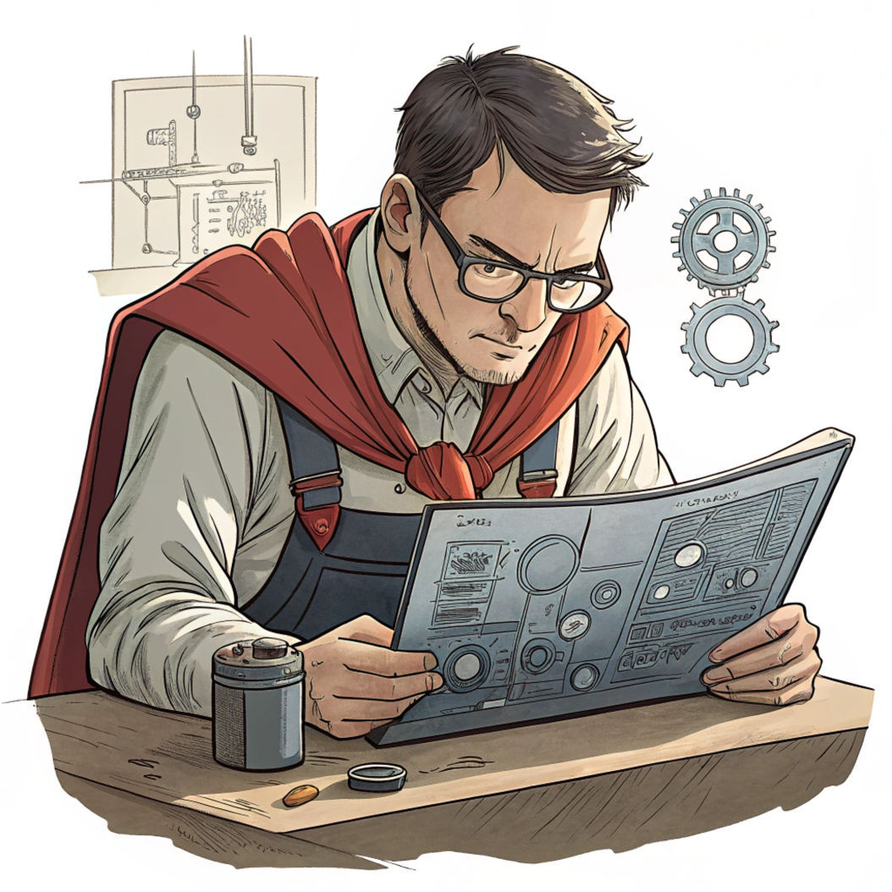
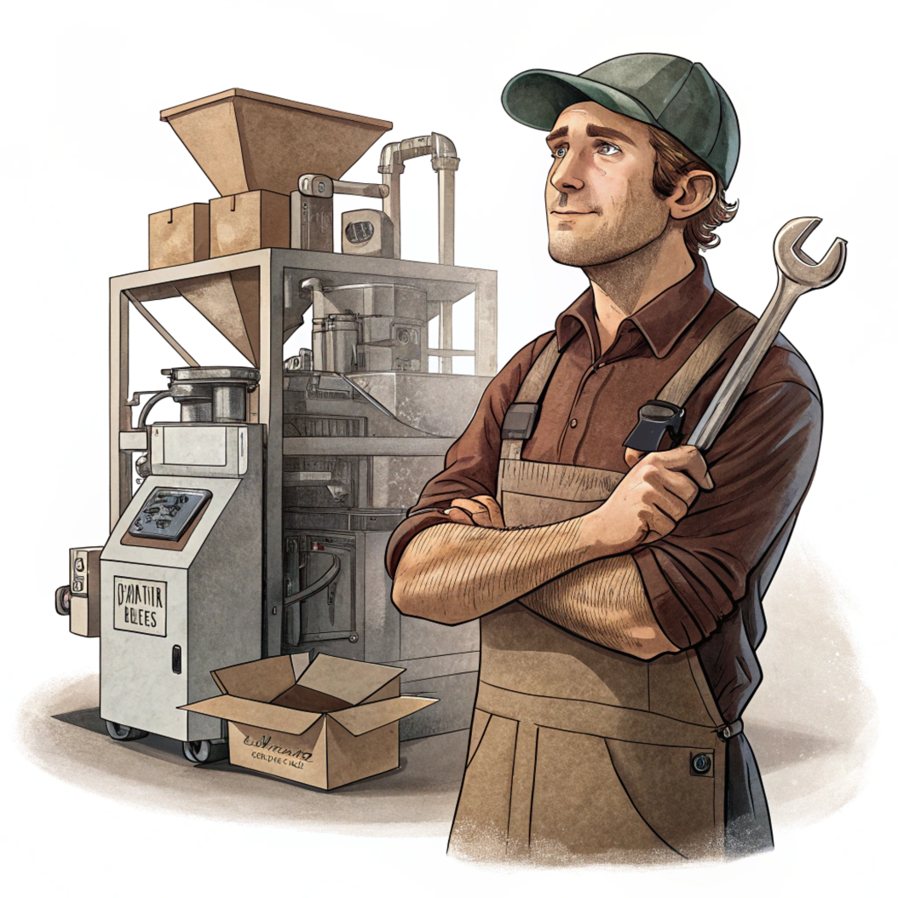
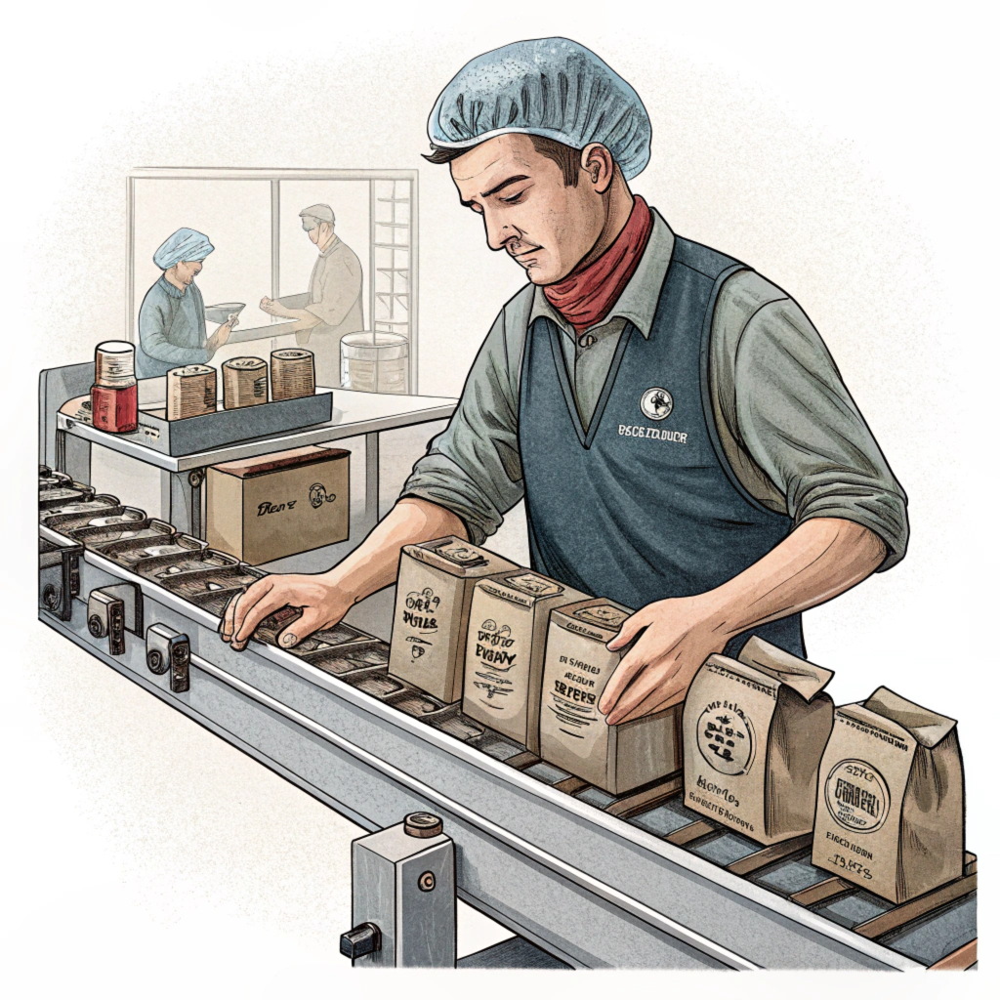

Компанія ТОВ «Фес Укр» (MacCoffee)
- Cучасне українське підприємство, яке понад 13 років виготовляє в Україні смачні та доступні продукти (бренди «MacCoffee», «HILLWAY» та iн.) і є лідером в категорії кава «3 в 1».
- Завод розташований в м. Золотоноша Черкаської області в центральній частині України.
- На території підприємства, яка займає 5 га, знаходиться адміністративні, виробничі будівлі, складський комплекс, власна виробнича лабораторія.
- ТОВ «ФЕС УКР» сертифіковане відповідно до вимог міжнародних стандартів якості та безпечності харчових продуктів згідно ISO 9001 та ISO 22000 (HACCP).
- Ми працюємо в штатному режимі і пропонуємо вакансії як для профі так і для початківців, які зацікавлені в стабільності та розвитку.
Доступні ваканції
Вакансія від 5 грудня 2024
Головний механік
36000-40000
грн,
Оклад після оподаткування
м. Золотоноша (Черкаська обл.)
Повна зайнятість.
Офіційне працевлаштування, соц.пакет, доставка.
Досвід роботи від 5 років. Вища освіта. 2,8 км від центру

Вакансія від 5 грудня 2024
Головний механік
36000-40000
грн,
Оклад після оподаткування
м. Золотоноша (Черкаська обл.)
Повна зайнятість.
Офіційне працевлаштування, соц.пакет, доставка. Досвід роботи від 5 років. Вища освіта. 2,8 км від центру
Вимоги до кандидата:
- вища освіта;
- досвід роботи на виробничому підприємстві від 5 років на аналогічних керівних посадах інженерно-технічного напрямку;
- досвід керування колективом від 10 осіб і більше;
- навички планування, ведення документації, ведення звітності;
- досвідчений користувач ПК, MS Oficce, 1С;
- вільне володіння українською мовою письмово і усно.
Обов’язки:
- забезпечує безперебійну і технічно правильну експлуатацію та надійну роботу устаткування, утримання його в працездатному стані;
- організовує роботу з складання і оформлення технічної і звітної документації. Керує розробленням нормативних матеріалів з ремонту устаткування, оформленням заявок на придбання матеріалів та запасних частин, необхідних під час експлуатації устаткування;
- вивчає умови роботи устаткування, окремих вузлів та деталей, розробляє і здійснює заходи щодо запобігання неплановим зупинкам устаткування, подовження строків служби вузлів та деталей, підвищення надійності його в експлуатації, організовує на підприємстві спеціалізований ремонт;
- вживає заходів щодо поліпшення експлуатації діючого устаткування, організації ремонтних робіт на основі механізації праці та впровадження передового досвіду, удосконалення організації праці працівників інженерної служби.
Ми пропонуємо:
- офіційне працевлаштування, своєчасну виплату заробітної плати;
- можливість професійного та карєрного зростання;
- тімбілдінги та корпоративні заходи;
- корпоративний зв’язок, комфортні умови роботи, чай та кава за рахунок компанії, безкоштовні комплексні обіди;
- доставку службовим транспортом з Черкас та по місту Золотоноша;
- повний соцпакет згідно КЗпП України;
- графік роботи- п’ятиденка з 8.00−17.00;
- надаємо матеріальну допомогу працівникам, які одружуються, стають батьками, святкують ювілеї тощо;
- заохочуємо довготривалі трудові відносини з компанією.
Вакансія від 23 грудня 2024
Менеджер з персоналу
27500
грн
м. Золотоноша (Черкаська обл.)
Повна зайнятість.
Офіційне працевлаштування, соц.пакет, доставка.
Досвід роботи від 5 років. Вища освіта. 2,8 км від центру
Вакансія від 23 грудня 2024
Менеджер з персоналу
27500
грн
м. Золотоноша (Черкаська обл.)
Повна зайнятість.
Офіційне працевлаштування, соц.пакет, доставка. Досвід роботи від 5 років. Вища освіта. 2,8 км від центру
Вимоги до кандидата:
- вища освіта у сфері управління, психології, соціальних наук, менеджменту;
- досвід роботи на аналогічній посаді від 2-х років;
- знання процесів пошуку, відбору, адаптації та розвитку персоналу;
- здатність ефективно взаємодіяти з різними категоріями працівників;
- знання трудового законодавства;
- володіння MS Office, навички роботи в 1С;
- англійська мова нарівні intermediate буде перевагою.
Обов’язки:
- організація та контроль процесу набору персоналу;
- створення профілів посад;
- проведення співбесід та оцінка кандидатів на відповідність вимогам вакансії;
- адаптація нових співробітників;
- формування та підтримка корпоративної культури компанії;
- розробка та вдосконалення системи мотивації та винагород для співробітників;
- проведення аналізу заробітних плат та пільг на ринку праці.
Ми пропонуємо:
- офіційне працевлаштування, своєчасну виплату заробітної плати;
- можливість професійного та карєрного зростання;
- тімбілдінги та корпоративні заходи;
- корпоративний зв’язок, комфортні умови роботи, чай та кава за рахунок компанії, безкоштовні комплексні обіди;
- доставку службовим транспортом з Черкас та по місту Золотоноша;
- повний соцпакет згідно КЗпП України;
- графік роботи- п’ятиденка з 8.00−17.00;
- надаємо матеріальну допомогу працівникам, які одружуються, стають батьками, святкують ювілеї тощо;
- заохочуємо довготривалі трудові відносини з компанією.
Вакансія від 5 грудня 2024
Налагоджувальник устаткування
32500-39000
грн
м. Золотоноша (Черкаська обл.)
Повна зайнятість.
Офіційне працевлаштування, соц.пакет, доставка.
Повна зайнятість. Досвід роботи від 1 року.
Середня спеціальна освіта. 2,8
км
від центру

Вакансія від 5 грудня 2024
Налагоджувальник устаткування
32500-39000
грн
м. Золотоноша (Черкаська обл.)
Повна зайнятість.
Офіційне працевлаштування, соц.пакет, доставка.
Повна зайнятість. Досвід роботи від 1 року.
Середня спеціальна освіта. 2,8
км
від центру
Вимоги до кандидата:
- технічна освіта відповідного напрямку (слюсар, механік, налагоджувальник, інженер);
- досвід роботи не обов’язковий, бажаючих та здібних навчимо практичним навикам під час роботи;
- уважність, відповідальність, технічна грамотність;
- відсутність обмежень у здоров'ї, що перешкоджають професійній діяльності.
Обов’язки:
- налагоджує, регулює і ремонтує напівавтоматизовані і механізовані лінії;
- виконує різні види ремонту, випробовує устаткування і здає в експлуатацію під робочим навантаженням.
Ми пропонуємо:
- офіційне працевлаштування, своєчасну виплату заробітної плати;
- можливість професійного та карєрного зростання;
- тімбілдінги та корпоративні заходи;
- корпоративний зв’язок, комфортні умови роботи, чай та кава за рахунок компанії, безкоштовні комплексні обіди;
- доставку службовим транспортом з Черкас та по місту Золотоноша;
- повний соцпакет згідно КЗпП України;
- графік роботи- змінний, по 12 годин, 2 через 2;
- надаємо матеріальну допомогу працівникам, які одружуються, стають батьками, святкують ювілеї тощо;
- заохочуємо довготривалі трудові відносини з компанією.
Вакансія від 23 грудня 2024
Оператор на виробництво
19000-27000
грн
м. Золотоноша (Черкаська обл.) Також
шукаємо у Драбові
Повна зайнятість.
Офіційне працевлаштування, соц.пакет, доставка.
Досвід роботи від 1 року. 2,8 км від центру

Вакансія від 23 грудня 2024
Оператор на виробництво
19000-27000
грн
м. Золотоноша (Черкаська обл.) Також шукаємо у Драбові
Повна зайнятість.
Офіційне працевлаштування, соц.пакет, доставка. Досвід роботи від 1 року. 2,8 км від центру
Робота не потребує особливих навичок, підійде більшості бажаючих, деталі нище.
Вимоги до кандидата:
- досвід роботи від 1-го року на виробничому підприємстві з автоматизованими лініями;
- навики експлуатації, налаштувань та роботи на обладнанні;
- уважність, охайність, відповідальність.
Обов’язки:
- випуск продукції на лінії;
- обслуговування обладнання і заміна витратних матеріалів;
- контроль показників якості і безпеки.
Ми пропонуємо:
- офіційне працевлаштування, своєчасну виплату заробітної плати;
- можливість професійного та карєрного зростання;
- тімбілдінги та корпоративні заходи;
- корпоративний зв’язок, комфортні умови роботи, чай та кава за рахунок компанії, безкоштовні комплексні обіди;
- доставку службовим транспортом з Черкас та по місту Золотоноша;
- повний соцпакет згідно КЗпП України;
- графік роботи- змінний, по 12 годин, 2 через 2;
- надаємо матеріальну допомогу працівникам, які одружуються, стають батьками, святкують ювілеї тощо;
- заохочуємо довготривалі трудові відносини з компанією.
Вакансія від 23 грудня 2024
Торговий представник
20000-30000
грн
м. Львів (Львівська обл.)
Повна зайнятість.
Офіційне працевлаштування, соц.пакет.
Вища освіта.
Вакансія від 23 грудня 2024
Торговий представник
20000-30000
грн
м. Львів (Львівська обл.)
Повна зайнятість.
Офіційне працевлаштування, соц.пакет. Вища освіта.
Компанія «MacCoffee», що входить до складу холдингу Food Empire Company, лідер України в категорії кави «3 в 1», запрошує в команду Ексклюзивного Торгового представника по місту Львів.
Вимоги до кандидата:
- Освіта середня-спеціальна, вища;
- Досвід роботи в торгівлі на аналогічній посаді від 1 року (сфера — FMCG).Готові розглянути кандидатів без досвіду роботи;
- Навички встановлення контакту, ефективної комунікації;
- Навички ведення переговорів і презентації;
- Навички виявлення потреб і роботи із запереченнями бажані;
- Навички ведення бухгалтерської і фінансової документації бажані;
- Наявність особистого авто вітається.
Обов’язки:
- Щоденне відвідування торгових точок згідно маршруту;
- Викладення продукції в торгових точках відповідно до стандартів мерчендайзингу компанії;
- Виконання плану продажів на ввіреній території;
- Залучення нових клієнтів;
- Робота з дебіторською заборгованістю;
- Робота з документацією по взаєминам із клієнтом.
Ми пропонуємо:
- Стабільну і своєчасну заробітну плату — ставка + премії;
- Компенсацію мобільного зв’язку;
- Систему професійного навчання і розвитку;
- Можливість кар'єрного росту.
Відгуки або резюме або за телефоном +38093xxxxxxx Віталій.
Ми вимогливі, водночас лояльні і надійні та цінуємо і навчаємо кожного співробітника. Для нас важливо знайти людей, з якими ми зможемо досягти спільних цілей та бути корсними один одному. Чекаємо на Ваші резюме з зазначенням рівня бажаної заробітної плати, якщо вона не вказана в вакансії!
Відправляючи своє резюме Ви даєте згоду на обробку персональних даних, у відповідності до Закону України «Про захист персональних даних».
Зверніть увагу, що процедура відбору займає до 5 робочих днів від моменту подання резюме. Зворотний зв’язок отримують претенденти, резюме яких відповідає вимогам вакансії. Дякуємо за розуміння.
Контакти відділу кадрів
Якщо Ви сповнені бадьорості та сил, хочете отримати унікальний досвід в цікавій справі - телефонуйте нам, чи відправляйте резюме, заходьте.
Телефон: +38(050) 37 52 086
Aбо внутрішній телефон на КПП біля стенду.
Email: naumenko@fesukr.com.ua
м. Золотоноша вул. Шевченка 235А
З понеділка по пятницю:
08:00—16:30, перерва з 12:00—13:00.